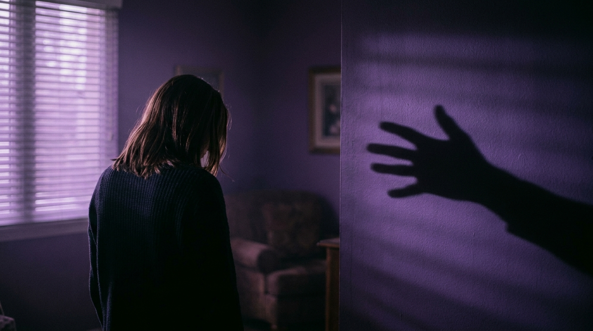
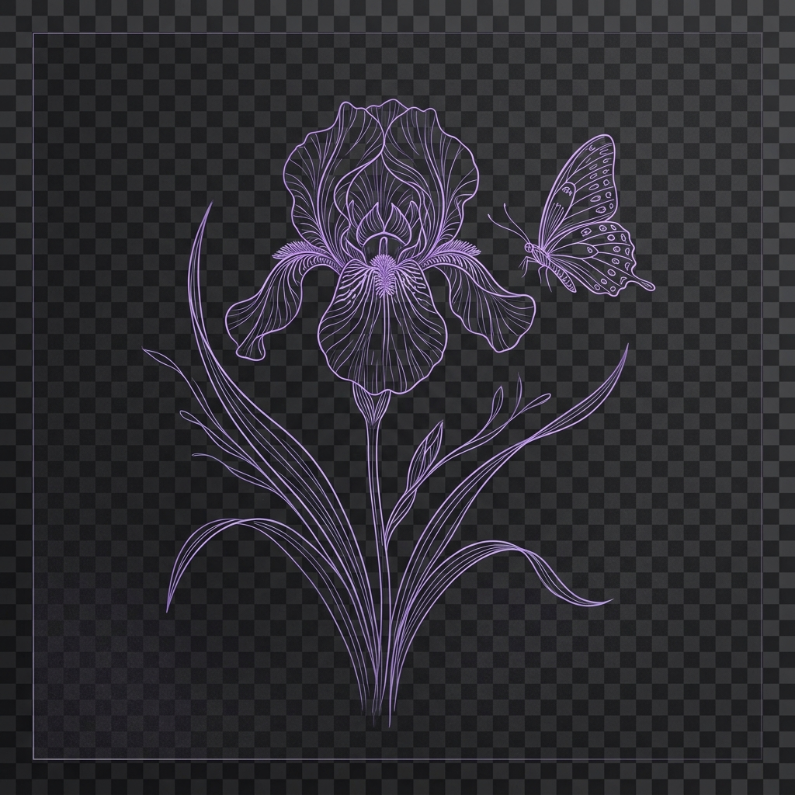

A violência doméstica é qualquer ação ou omissão que cause morte, lesão, sofrimento físico, sexual ou psicológico à mulher no âmbito doméstico.
A Lei Maria da Penha (Lei nº 11.340/2006) define violência doméstica e familiar contra a mulher como qualquer ação ou omissão baseada no gênero que lhe cause morte, lesão, sofrimento físico, sexual ou psicológico e dano moral ou patrimonial.
A violência contra a mulher pode se manifestar de diversas formas, desde agressões físicas visíveis até manipulações emocionais sutis que destroem a autoestima e a autonomia da vítima.
Romper o ciclo da violência é possível. Informação e apoio são os primeiros passos para a liberdade.

Reconhecer os diferentes tipos de violência é essencial para identificar a situação e buscar ajuda.
Qualquer conduta que ofenda a integridade ou saúde corporal da mulher: empurrões, tapas, socos, queimaduras, entre outros atos de agressão.
Ameaças, constrangimento, humilhação, manipulação, isolamento, chantagem, ridicularização e vigilância constante que prejudicam a saúde mental.
Qualquer conduta que constranja a mulher a presenciar, manter ou participar de relação sexual não desejada, mediante intimidação ou uso da força.
Retenção, subtração ou destruição de objetos, instrumentos de trabalho, documentos pessoais, bens, valores e recursos econômicos.
Calúnia, difamação ou injúria — atitudes que ferem a honra e a imagem da mulher perante a sociedade.
Exposição de imagens íntimas, perseguição online, ameaças por redes sociais e controle digital que amplifica o ciclo da violência.
Fique atenta a esses comportamentos. Reconhecê-los é o primeiro passo para se proteger.
A lei está do seu lado. Conheça as proteções garantidas pela legislação brasileira.
A Lei nº 11.340/2006 cria mecanismos para coibir a violência doméstica e familiar contra a mulher, garantindo medidas protetivas de urgência.
Afastamento do agressor do lar, proibição de contato e aproximação, e encaminhamento a programas de proteção.
A Lei nº 13.104/2015 qualifica o homicídio contra a mulher por razões de gênero como crime hediondo com penas mais severas.
Toda mulher em situação de violência tem direito a assistência jurídica gratuita pela Defensoria Pública para todas as fases processuais.
Em muitos estados é possível registrar boletim de ocorrência pela internet, facilitando a denúncia em situações de risco.
A Lei nº 14.132/2021 tipifica o crime de perseguição (stalking), com pena de reclusão de 6 meses a 2 anos.
A violência doméstica não é um problema privado — é uma questão de saúde pública que afeta toda a sociedade. Seus efeitos ultrapassam o ambiente familiar e impactam a economia, a educação, a saúde mental coletiva e as gerações futuras.
"A violência contra a mulher é talvez a mais vergonhosa violação dos direitos humanos. Ela não conhece limites geográficos, culturais ou de riqueza."
— Kofi Annan, ex-Secretário-Geral da ONU
Crianças expostas à violência têm maior probabilidade de desenvolver traumas, dificuldades escolares e repetir o ciclo na vida adulta.
A violência doméstica custa bilhões ao sistema de saúde, justiça e assistência social, além de reduzir a produtividade econômica.
Vítimas sofrem com depressão, ansiedade, TEPT e baixa autoestima, consequências que podem durar por toda a vida.
Se você ou alguém que conhece está em situação de violência, siga esses passos.
Identifique os sinais de violência. Nenhum tipo de agressão é aceitável ou justificável.
Se possível, vá para a casa de alguém de confiança ou um local protegido.
Denuncie ligando para a Central de Atendimento à Mulher ou Polícia Militar.
Vá a uma Delegacia da Mulher e solicite medidas protetivas de urgência.